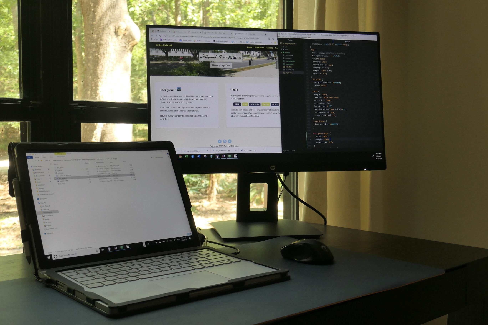

Background
I enjoy the creative process of building and implementing a web design. It allows me to apply attention to detail, research, and problem solving skills.
I build on my professional experiences as a chemist, researcher, teacher, and manager.
I love to explore different places, cultures, foods and the arts.
Goals
Building and expanding knowledge and expertise in the following areas:
- HTML
- CSS
- JavaScript
- UX/UI design
Creating web pages and user experiences that inspire to explore, use unique styles, and combine ease of use with a clear communication of purpose.